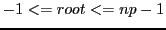

Next: psb_amn Global
Up: Parallel environment routines
Previous: psb_min Global
Contents
call psb_amx(icontxt, dat, root)
This subroutine implements a maximum absolute value reduction
operation based on the underlying communication library.
- Type:
- Synchronous.
- On Entry
-
- icontxt
- the communication context identifying the virtual
parallel machine.
Scope: global.
Type: required.
Intent: in.
Specified as: an integer variable.
- dat
- The local contribution to the global maximum.
Scope: local.
Type: required.
Intent: inout.
Specified as: an integer, real or complex variable, which may be a
scalar, or a rank 1 or 2 array. Type, kind, rank and size must agree on all processes.
- root
- Process to hold the final value, or
 to make it available
on all processes.
to make it available
on all processes.
Scope: global.
Type: optional.
Intent: in.
Specified as: an integer value
, default -1.
- On Return
-
- dat
- On destination process(es), the result of the maximum operation.
Scope: global.
Type: required.
Intent: inout.
Specified as: an integer, real or complex variable, which may be a
scalar, or a rank 1 or 2 array. Type, kind, rank and size must agree on all processes.
Notes
- The
dat argument is both input and output, and its
value may be changed even on processes different from the final
result destination.
- The
dat argument may also be a long integer scalar.
Next: psb_amn Global
Up: Parallel environment routines
Previous: psb_min Global
Contents